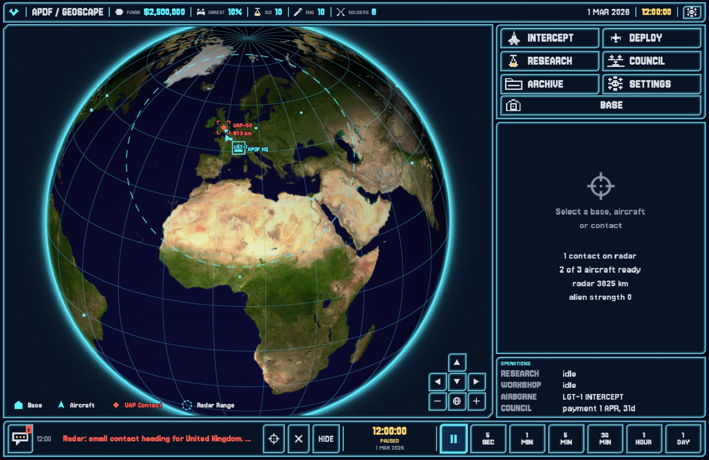
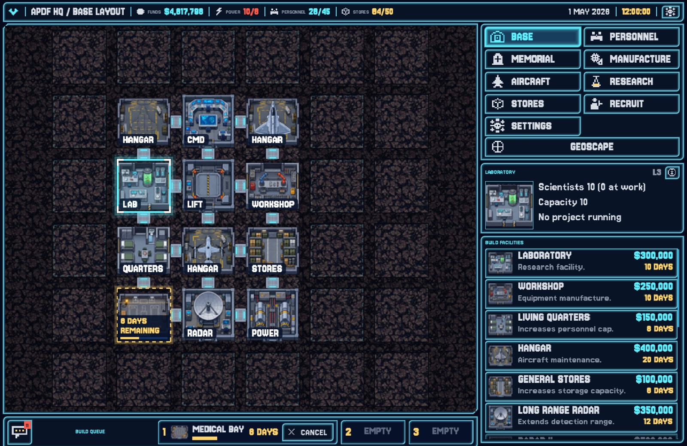
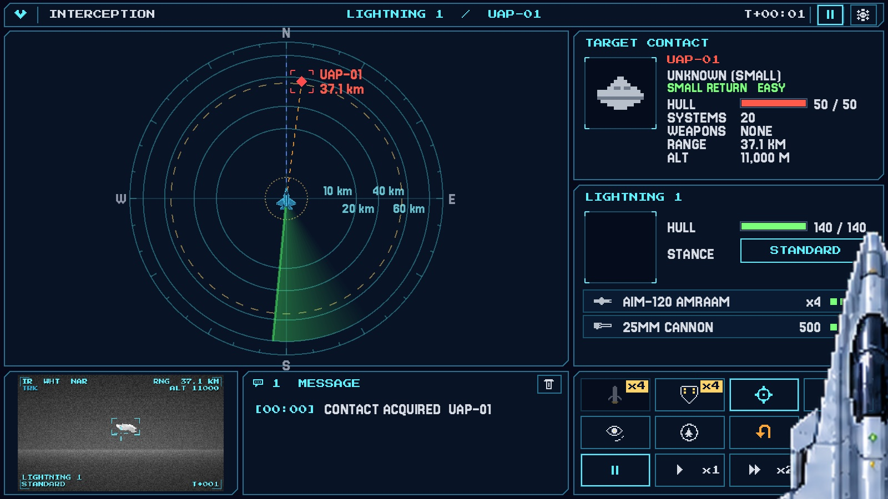
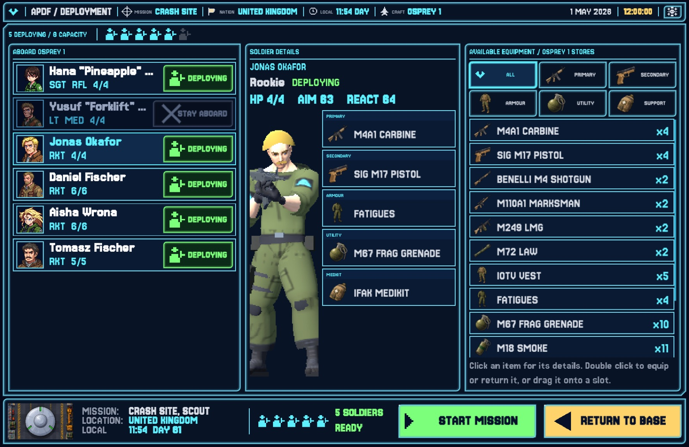
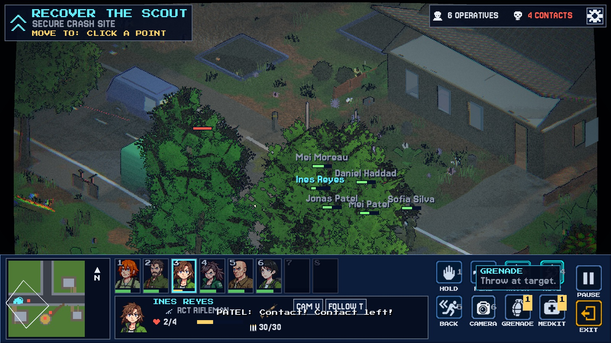
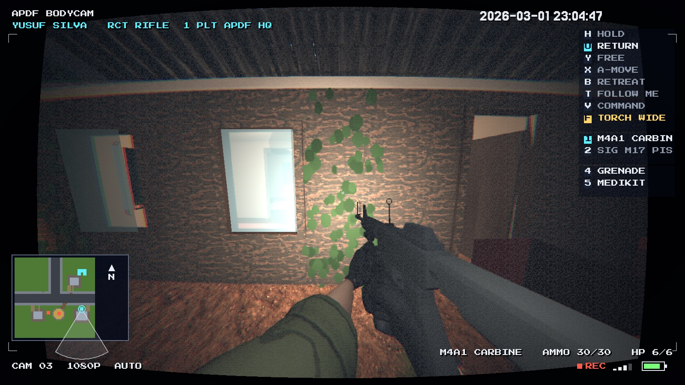

Briefing
Under a United Nations mandate that does not appear in any published resolution, sixteen governments created the Anomalous Phenomena Defence Force. The secrecy is the point, and it sets the budget: funding is kept small enough not to draw attention, which is the figure you will be working with. The member states pool their contributions and point every sensor they own at the sky. The Force has been issued two refitted interceptors with upgraded sensors and weapons, one modified Osprey that carries six, and eight soldiers with the best kit 2026 can issue to manage UAP engagements on the ground. It has ten of the world's better scientists, ten engineers, a hardened underground base and a UAP radar that reaches 3,825 kilometres. The Council pays on the first of the month and reads the minutes; where the Force fails, member states cut what they send. The mandate is plain enough to fit on one line: find and engage all UAP activity, research what comes back, and deliver whatever raises humanity's ability to deter them and defend the planet against enemies unknown.
First run
The beta is not code signed yet, so both operating systems will warn you the first time. This is expected.
Windows
- Unzip the download. You get a single
APDF.exe. - Double click it. SmartScreen shows "Windows protected your PC".
- Click More info, then Run anyway.
- Windows only asks once per download.
macOS
- Unzip the download and drag
APDF.appto Applications. - Double clicking says the app cannot be verified. Close that.
- Right click the app, choose Open, then Open again.
- Or go to System Settings, Privacy and Security, scroll down and click Open Anyway.
How to play
Commander, the Anomalous Phenomena Defence Force is sixteen governments' answer to the lights over their cities. They pay for it on the first of every month and they read the minutes.
You hold one base, two Lightning interceptors with four AMRAAM missiles and a 25 mm cannon each, one Osprey that carries six soldiers, eight rookies, ten scientists and ten engineers. The first contact comes about five days after BEGIN. Use the quiet: start a research project, put the Workshop on a Radar Site, check who carries what.
SPACE pauses the clock on the geoscape and the base, 1 to 6 set the speed, ESCAPE opens the menu. The ? in the top bar opens the in-game guide on any screen, at the chapter for where you are.
What to focus on
- Day one. Ten scientists on Recon Drone or Composite Plate; ten engineers on a Radar Site. Place it through DEPLOY toward the members you cannot see.
- Week one. Hand out the two M110A1s, the two M249s and the drones in PERSONNEL; check everyone carries armour and an IFAK. Recruit two or three soldiers so one wound does not ground the squad.
- First contact, about day five. Scramble both Lightnings at a small return, press F for each AMRAAM as it locks, let the cannon finish. Over land, send the Osprey inside 24 hours. Shadow anything LARGE.
- First wreck. Weapon Fragments, Alien Alloys, Alien Biology, then Rail Weapons. Sell no salvage a project still needs.
- Month one. Dig Living Quarters or a second Laboratory and hire to fill it; Long Range Radar makes the dish 6120 km. Answer every terror site, with rookies if need be.
- Month two. Keep the Osprey ready for landed hulls; an intact power source is the way to Elerium-115. Read the Council page on the first. Unrest left to sit is funding you do not get back.
Screens






Known issues
- This is a beta. Things will be unfinished and some things will be broken.
- Save games may stop loading between versions. Finish a campaign on the version you started it on, or expect to start again.
- The download is about 1.2 GB. Give it a few minutes on an ordinary connection.
- The bush and forest maps are heavy on older GPUs. If a ground mission stutters, lower the resolution in Options.
- Builds are not code signed, so the first run warnings above are normal.
Found something? Open an issue on GitHub with what you did, what happened, and the version from the title screen.